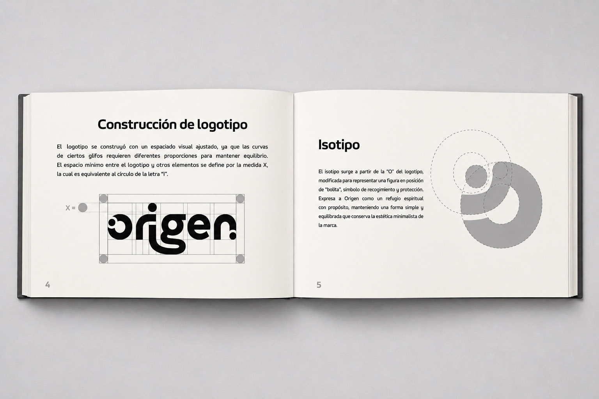
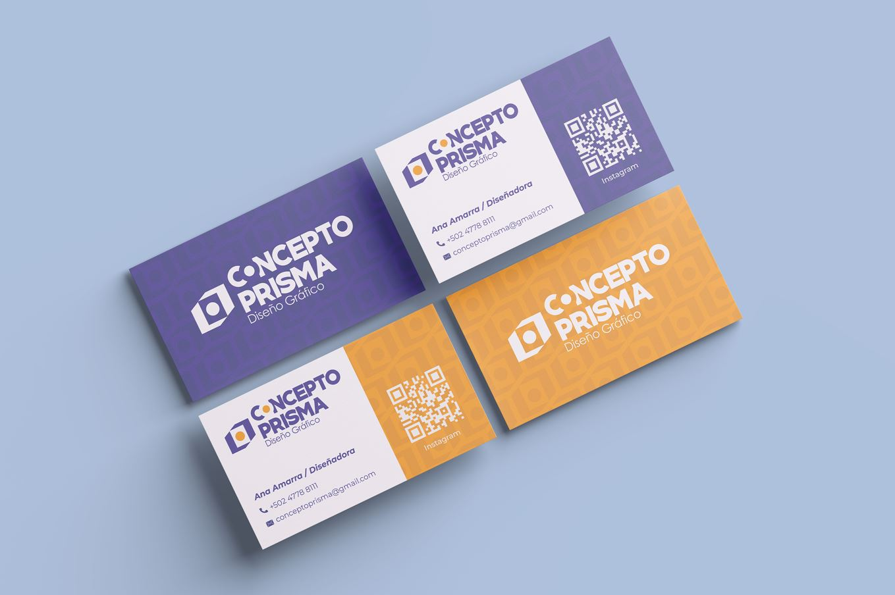
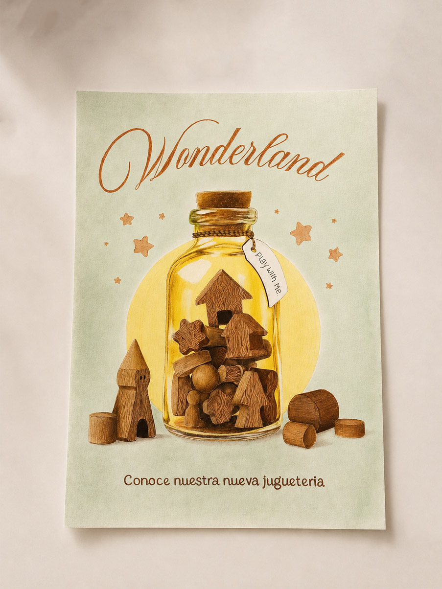
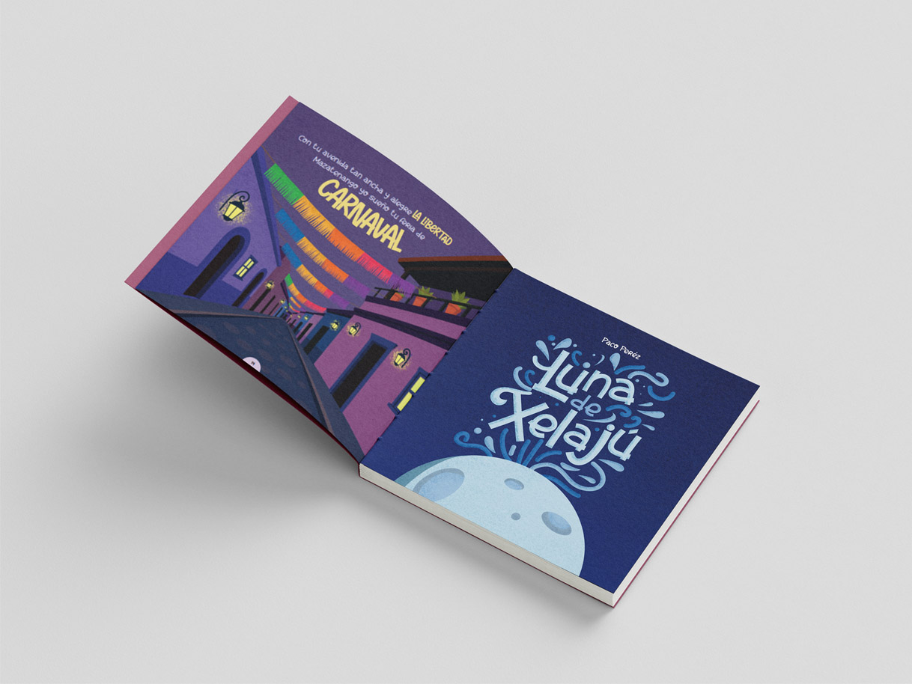
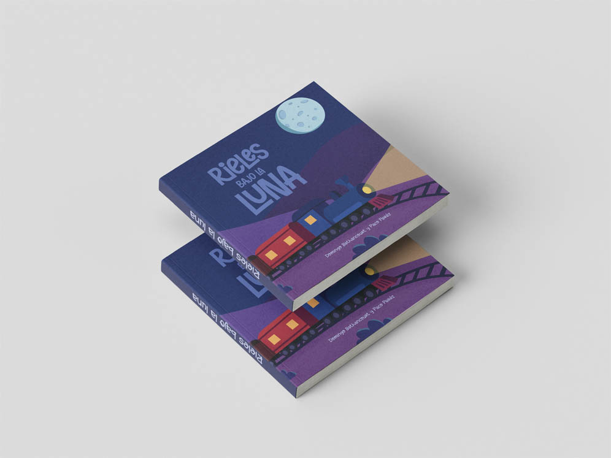
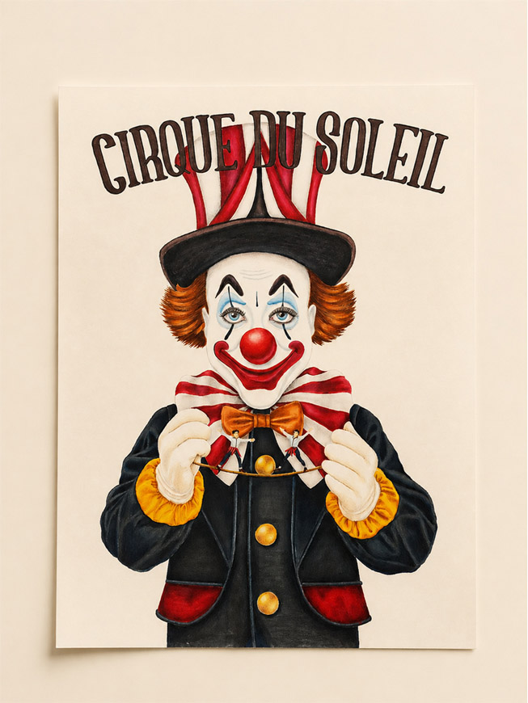
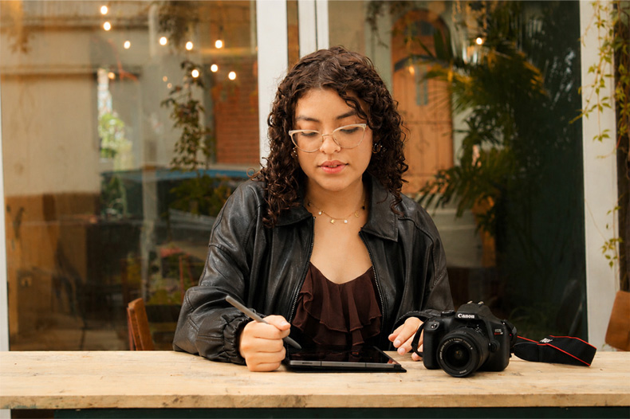

Identidad de marca
Creo marcas con personalidad visual sólida, desde logotipos y paletas de color hasta aplicaciones gráficas que conectan con la esencia de cada proyecto.
portafolio creativo · ana sofía amarra
By Amarra es mi marca personal: una propuesta de diseño gráfico que comunica ideas con identidad, estrategia y una estética expresiva.

branding
ilustración
editorialtrabajos seleccionados
Una selección de proyectos que muestran mi forma de construir identidad, composición y narrativa visual.

Creo marcas con personalidad visual sólida, desde logotipos y paletas de color hasta aplicaciones gráficas que conectan con la esencia de cada proyecto.

Diseño libros, revistas y piezas editoriales cuidando composición, tipografía y narrativa visual para lograr experiencias claras y atractivas.

Desarrollo ilustraciones manuales y digitales para proyectos publicitarios, editoriales y creativos, explorando estilos expresivos y conceptuales.

marca personal
Soy Ana Sofía Amarra, diseñadora gráfica enfocada en branding, contenido digital y piezas visuales que combinan estética, concepto y funcionalidad.
conocer másproceso creativo
Trabajo cada proyecto desde la intención: entender, conceptualizar, diseñar y refinar.
Investigo el objetivo, el público y el mensaje que debe comunicar el proyecto.
Defino referencias, dirección visual y una idea central que guíe el diseño.
Desarrollo piezas visuales con composición, color, tipografía y personalidad.
Ajusto detalles para que el resultado sea claro, atractivo y funcional.
contacto
Trabajemos juntos para convertirla en una experiencia visual memorable y funcional.
escríbeme